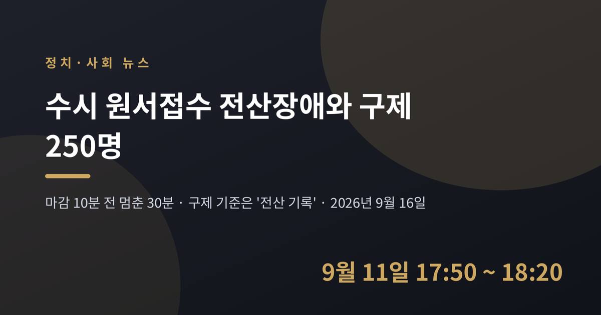
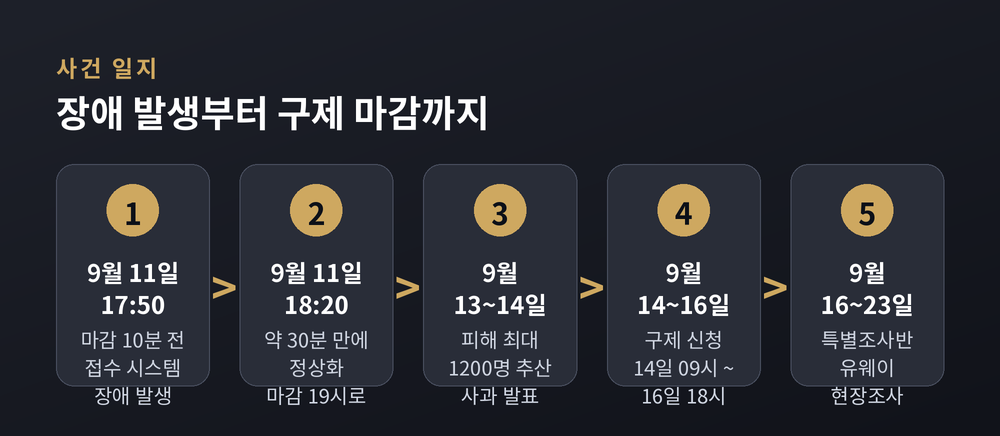
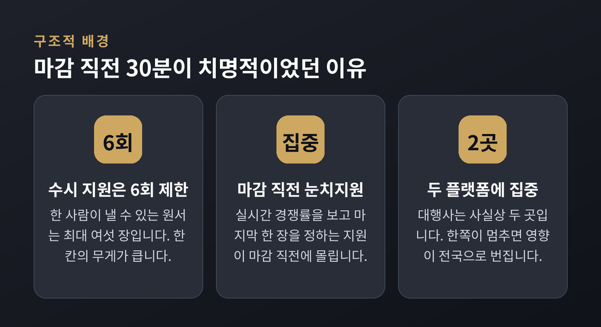
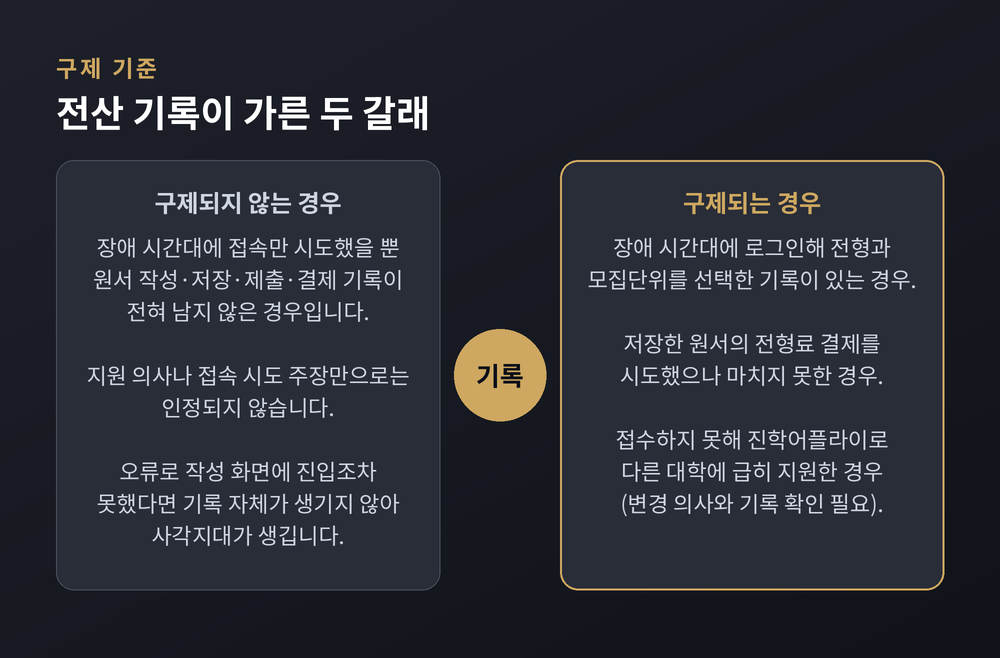
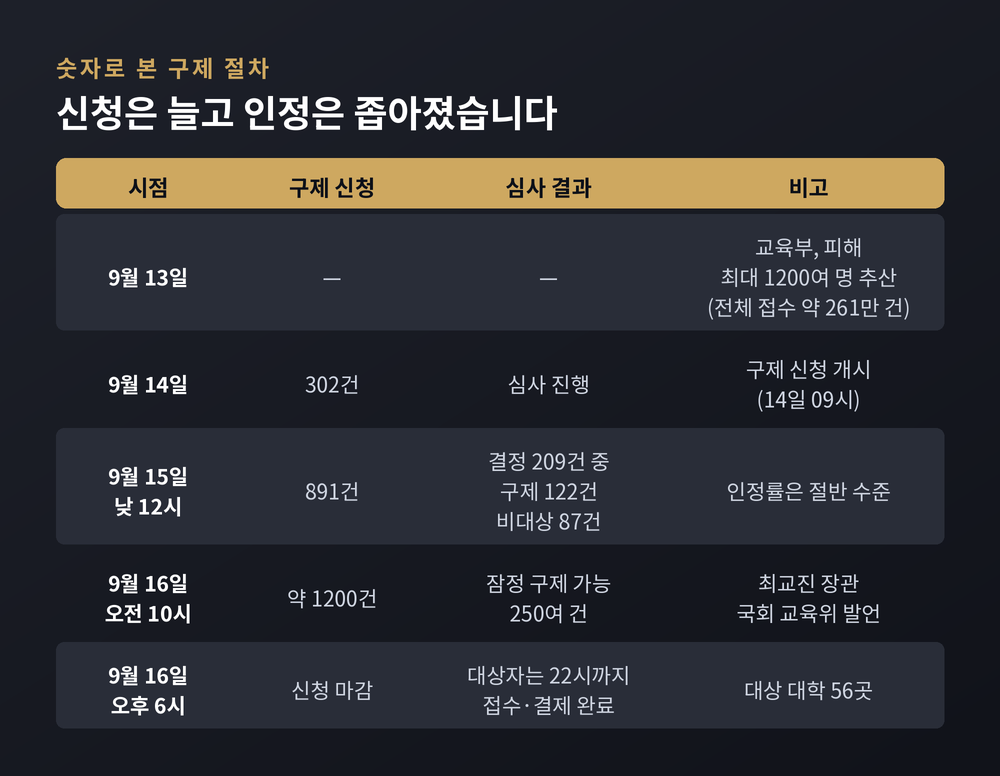
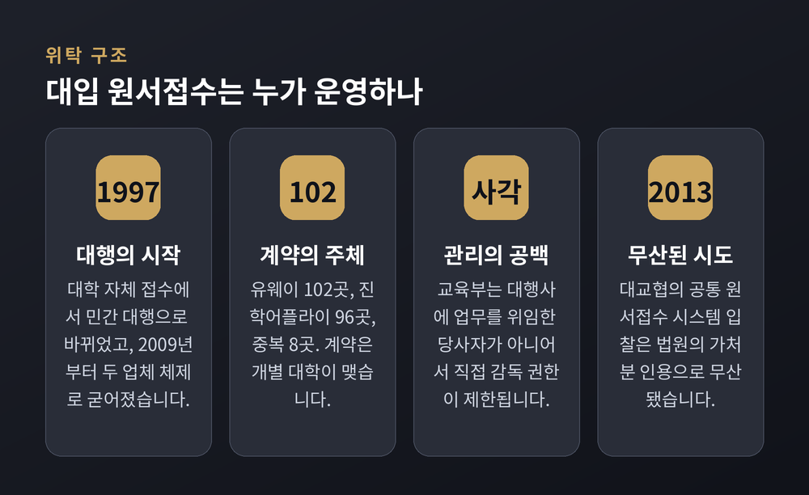

이번 글에서는 2027학년도 대입 수시모집 원서접수 과정에서 벌어진 전산장애와, 그 뒤에 이어진 구제 절차를 정리해 보겠습니다. 마감 10분 전에 멈춘 30분이 어떤 결과를 낳았는지, 구제 기준을 둘러싼 쟁점은 무엇인지 차례로 살펴보겠습니다.
세 줄 요약
사건은 2026년 9월 11일 금요일 오후에 일어났습니다.
그날 오후 6시는 상당수 대학의 수시 원서접수 마감 시각이었습니다. 마감을 불과 10분 앞둔 오후 5시 50분경, 대입 원서접수 대행업체 유웨이어플라이의 시스템에 장애가 발생했습니다. 복구는 오후 6시 20분경에 이뤄졌습니다. 약 30분입니다.
그 30분 동안 일부 수험생은 원서를 저장하지 못했고, 전형료 결제 화면에서 멈췄습니다.
대교협은 마감 시각을 오후 6시에서 7시로 한 시간 연장했습니다. 유웨이어플라이뿐 아니라 또 다른 대행사인 진학어플라이의 마감 시각도 함께 늘렸습니다. 이 연장은 교육부가 직접 지시한 것이 아니라, 대교협의 '장애 대응 매뉴얼'에 따른 조치였다는 것이 교육부 설명입니다.
그럼에도 연장 사실을 제때 확인하지 못했거나, 끝내 절차를 마치지 못한 수험생이 남았습니다. 교육부는 전체 수시 원서접수 약 261만 건 가운데 접수를 완료하지 못한 수험생을 최대 1,200여 명으로 추산했습니다.

시간대가 문제였습니다.
수시 지원은 최대 6회로 제한됩니다. 한 칸의 무게가 큽니다. 그래서 수험생들은 마감 직전까지 실시간 경쟁률을 확인하며 마지막 한 장을 어디에 낼지 저울질합니다. 흔히 '눈치지원'이라 부르는 관행입니다.
결과적으로 마감 직전 10~30분은 두 가지가 겹치는 구간입니다. 서버에는 트래픽이 가장 몰리고, 수험생에게는 되돌릴 시간이 가장 적습니다.
예전에는 접수 창구가 대학마다 따로 있었습니다. 지금은 두 개의 민간 플랫폼으로 수렴돼 있습니다. 한쪽이 멈추면 그 영향이 전국 단위로 번지는 구조인 셈입니다.

유웨이어플라이는 장애 원인을 보안 업데이트 과정에서 생긴 버그로 설명했습니다. 웹서버와 원서가 저장된 데이터베이스 서버의 연결부에 문제가 생겼다는 것입니다. 트래픽도 전년 대비 30%가량 늘었다고 덧붙였습니다. 다만 이는 업체 측 설명이며, 교육부·대교협 특별조사반의 공식 조사 결과는 아직 나오지 않았습니다.
구제 절차는 9월 14일 오전 9시에 시작돼 9월 16일 오후 6시에 접수를 마쳤습니다. 대상은 9월 11일 오후 6시에 마감한 56개 대학의 지원자입니다. 신청은 유웨이어플라이 홈페이지에서, 장애 당시 쓰던 동일 아이디로, PC에서만 가능했습니다. 대학이 여러 곳이면 각각 따로 내야 했습니다.
판단 기준은 하나로 압축됩니다. 장애 시간대에 남은 전산 기록이 있느냐입니다.

구제가 인정되는 경우는 세 갈래입니다. 첫째, 장애 시간대에 로그인해 전형과 모집단위를 선택한 기록이 남은 경우입니다. 둘째, 저장해 둔 원서의 전형료 결제를 시도했으나 마치지 못한 경우입니다. 셋째, 원래 가려던 대학에 넣지 못해 진학어플라이를 통해 다른 대학에 급히 지원한 경우입니다. 이 경우에도 변경을 원한다는 사실과 관련 기록이 확인돼야 합니다.
반대로, 접속만 시도했을 뿐 작성·저장·제출·결제 기록이 전혀 없다면 인정되지 않습니다.
구제받더라도 바꿀 수 있는 것은 없습니다. 전형과 모집단위는 변경할 수 없습니다. 기록과 다른 전형이나 모집단위로 원서를 내면 접수가 취소되고, 다시 낼 수도 없습니다. 구제는 중단된 절차를 마무리할 기회이지 새로 고를 기회는 아니라는 취지입니다.
바로 이 지점에서 가장 날카로운 질문이 나왔습니다.
9월 16일 국회 교육위원회 전체회의에서 김문수 더불어민주당 의원은 이렇게 짚었습니다. 원서 작성부터 결제까지 대략 3분이 걸리는데, 장애 직후인 오후 5시 51분에서 55분 사이에 접속한 수험생도 시스템만 정상이었다면 6시 전에 제출을 마칠 수 있었다는 것입니다.
최교진 교육부 장관의 답변은 이랬습니다. 작성·저장·제출·결제 네 단계 가운데 무엇이라도 했다면 기록은 남게 돼 있고, 그것이 없으면 현재로서는 구제할 방법이 없다는 것입니다.
기준의 일관성으로 보면 이해되는 선 긋기입니다. 로그를 요구하지 않으면 실제 피해자와 뒤늦은 신청자를 가릴 방법이 사라지고, 그때는 정상적으로 접수한 다수와의 형평이 무너집니다.
그러나 다른 각도도 있습니다. 시스템 오류 때문에 작성 화면 자체에 진입하지 못했다면, 피해를 입고도 입증할 기록이 아예 생기지 않습니다. 피해를 증명할 수단을 없앤 것이 사고 그 자체라는 역설입니다.
아직 완전한 답은 나오지 않았습니다.

숫자는 이렇게 좁혀졌습니다. 9월 15일 낮 12시 기준 신청은 891건이었고, 결정된 209건 가운데 122건이 구제, 87건이 비대상이었습니다. 하루 뒤인 9월 16일 오전 10시 기준으로는 신청 약 1,200건에 잠정 구제 가능 250여 건입니다. 최 장관은 이 수치를 국회 교육위에서 직접 밝혔습니다.
또 하나의 불씨는 연장 그 자체에서 나왔습니다.
대교협은 마감을 연장하면서 해당 대학들에 최종 경쟁률을 공개하지 말라고 안내했습니다. 그런데 경인교대, 국립공주대, 국립목포대 등 17곳이 이를 인지하지 못한 채 경쟁률을 공개했습니다.
대학들은 보통 마감 직전에 실시간 경쟁률 공개를 멈춥니다. 이번에는 최종 경쟁률이 드러난 상태에서 한 시간이 더 열렸습니다. 먼저 낸 수험생과 나중에 낸 수험생 사이에 정보의 양이 달라진 셈입니다.
"성실한 사람만 불리해진다"는 반응이 수험생과 학부모 사이에서 나왔고, 서명운동과 국회 청원 움직임으로도 이어졌다는 보도가 있습니다. 다만 참여 규모나 성립 여부는 확인되지 않았습니다.
교육부는 이 17개 대학을 전수 점검해 불공정이 의심되는 접수에 대해 취소를 검토하겠다고 밝혔습니다. 최 장관도 형평성 문제를 "잘 살펴보겠다"고 답했습니다.
책임 소재를 놓고는 여러 주체의 설명이 엇갈립니다.
최교진 장관은 무거운 책임감을 느낀다면서도, 장애 상황과 대처에 대한 일차적 책임은 업체와 대교협, 대학에 있다고 말했습니다. 동시에 감독 책임이 교육부에 없다고 생각하지는 않는다고 덧붙였습니다.
유웨이어플라이는 성윤석 대표 명의의 사과문을 냈습니다. 수험생과 학부모, 대학 관계자에게 진심으로 사과한다며, 마감을 앞두고 접수하던 수험생에게 큰 혼란과 불편을 끼쳤다고 적었습니다. 철저히 원인을 규명하고 비상 대응 체계를 고도화하겠다고도 했습니다. 대교협과 유웨이는 9월 14일 함께 고개를 숙였습니다.
한국교원단체총연합회는 결이 다른 지적을 내놨습니다. 대입 업무의 안정성과 공정성을 확보할 최종 책임까지 민간에 맡길 수는 없으며, 교육 당국의 관리·감독 책임도 분명히 해야 한다는 것입니다.
구조를 보면 이 논쟁의 배경이 보입니다.

대입 원서접수는 1997년 무렵부터 민간이 대행하기 시작했고, 2009년부터는 유웨이어플라이와 진학어플라이 두 곳 체제로 굳어졌습니다. 유웨이와 계약한 4년제 대학이 102곳, 진학어플라이와 계약한 대학이 96곳이며, 두 곳과 중복 계약한 대학이 8곳입니다.
핵심은 계약의 주체입니다. 계약은 개별 대학과 대행사 사이에서 맺어집니다. 교육부가 대행사에 업무를 위임하거나 직접 감독하는 구조가 아닙니다. 교육부 관계자도 "사각지대가 존재하는 것 같다"고 인정했고, 민간업체를 조사할 법적 권한이 있는 것은 아니라고 설명했습니다.
공적 체계를 만들려는 시도가 없었던 것은 아닙니다. 2013년 대교협이 공통 원서접수 시스템 개발 입찰을 추진했지만 법원의 가처분 인용으로 무산됐습니다. 지난해 5월에는 공정거래위원회가 두 업체에 시정명령을 내렸습니다. 10년 넘게 계약을 따내거나 유지하려고 100억원에 가까운 물품을 대학에 제공한 사실이 드러났기 때문입니다. 당시 공정위는 보안성과 안정성, 장애처리 능력 같은 품질이 아니라 후원금과 물품 규모로 경쟁하는 관행을 문제 삼았습니다.
교육부와 대교협은 특별조사반을 꾸려 9월 16일부터 23일까지 유웨이어플라이 현장조사를 진행합니다. 장애 원인만이 아니라 대응 과정과 운영·관리체계 전반을 들여다보고, 필요하면 수사 의뢰 등 법적 책임도 묻겠다는 방침입니다.
최 장관은 조사 결과를 바탕으로 공적 원서접수 체계로의 개편을 검토하겠다고 밝혔습니다.
다만 정부 안에서도 온도차는 있습니다. 9월 14일 교육부 실무 라인은 공공기관이 직접 시스템을 구축하는 방안에 대해 "지금 말씀드리기에 다소 성급하다"며, 현재 시스템의 문제를 면밀히 검토한 뒤 결정할 사항이라고 답했습니다.
수험생들의 시선은 이미 다음 일정을 향해 있습니다. 정시 원서접수 역시 같은 업체가 대행하기 때문입니다. 커뮤니티에서는 "대행 시스템을 바꾸지 않으면 몇 년 내 정시에서도 똑같은 일이 터질 수 있다"는 우려가 나왔습니다.
정리하면 이렇습니다.
30분의 장애가 남긴 것은 접수하지 못한 원서만이 아니었습니다. 누가 피해자인지 가려내는 기준, 마감을 연장했을 때 생기는 정보 격차, 국가적 절차를 민간 계약에 얹어둔 구조까지 한꺼번에 드러났습니다.
"기록이 남지 않은 피해는 피해가 아닌가." 이번 사안이 남긴 질문은 결국 여기로 모입니다.
특별조사 결과가 나오면 원인과 책임의 윤곽이 좀 더 분명해질 것입니다. 그 결론이 다음 수험생에게도 같은 30분을 되풀이하지 않게 할 수 있느냐고 물으신다면, 지금은 아직 지켜볼 일이라고 답하겠습니다.